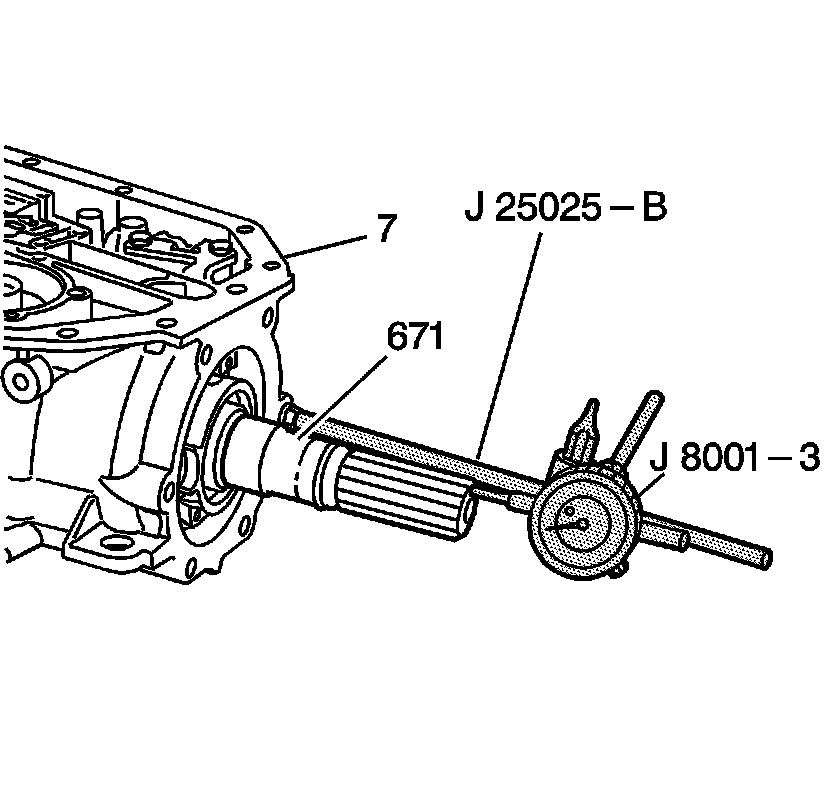

Rear Unit End Play Check
Rear Unit End Play Check
Tools Required
^ J 8001 Dial Indicator Set
^ J 25025-B Dial Indicator Post and Guide Pin Set

1. Assemble the J 25025-B by attaching the threaded rod and the dial indicator holder to one of the case extension bolt holes on the transmission case (7).
2. Push the output shaft assembly (671) in to remove any slack.
3. Install the J 8001-3 on the dial indicator holder. Index the J 8001-3 to the end of the output shaft (671).
4. Set the J 8001-3 to 0.
5. Move the output shaft (671) in and out, noting the amount of end play. The correct end play is 0.127-0.508 mm (0.005-0.020 in).
Important: During reassembly, the rear unit end play check must be repeated in order to verify the accuracy of the selective washer.
6. Record this measurement for future reference.
7. Remove the tools.